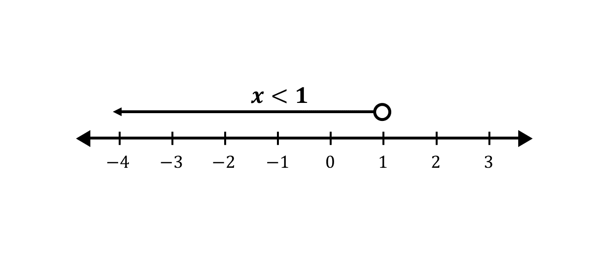
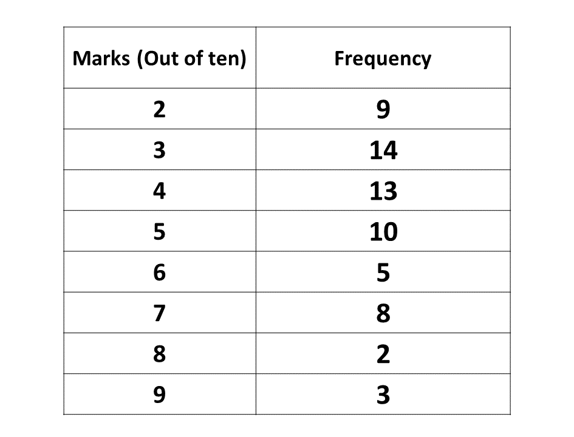

GUIDE (BECE - 1992)
You have 60 minutes for each section. Try to work on your speed as you prepare towards the final exam.
Good luck and remember to check your answers with the solutions provided. If you have any questions, feel free to ask your teacher or refer to the video lessons for more help.
Section A - Multiple Choice Questions
You have 60 minutes to complete this test. The timer will start when you begin.
Section B
Question 1
-
Solve \(5 - 2x > x + 2\), where \(x\) is a real number.
Illustrate your result on the number line.
Question 1. \(a\)
\(5 - 2x > x + 2\)
\(\Rightarrow -2x - x > 2 -5\)
\(\Rightarrow \hspace{0.6cm} -3x > -3\)
\(\Rightarrow \hspace{0.6cm} \dfrac{-3x}{-3} < \dfrac{-3}{-3}\)
\(\Rightarrow \hspace{1cm} x < 1\)
\(\therefore\) {\(x:x < 1, \ x\) is a real number}
Illutrating on the number line:
 -
Find the truth set of the equation:
\(\frac{2}{3}(3y - 1) - (y + 2) = \frac{1}{3}\)
Solution
\(\frac{2}{3}(3y - 1) - (y + 2) = \frac{1}{3}\)
Multiplying through by the L.C.M of 3
\(\Rightarrow 3(\frac{2}{3}(3y - 1)) - 3(y + 2) \)\(= 3(\frac{1}{3})\)
\(\Rightarrow 2(3y - 1) - 3(y + 2) = 1\)
\(\Rightarrow 6y - 2 - 3y - 6 = 1\)
\(\Rightarrow 6y - 3y - 2 - 6 = 1\)
\(\Rightarrow \hspace{1.3cm} 3y - 8 = 1\)
\(\Rightarrow \hspace{1.88cm} 3y = 1 + 8\)
\(\Rightarrow \hspace{1.88cm} 3y = 9 \)
\(\Rightarrow \hspace{1.76cm} \dfrac{3y}{3} = \dfrac{9}{3}\)
\(\Rightarrow \hspace{2.1cm} y = 3\)
\(\therefore y\) is 3
Hence, the truth set of the equation is \(\{y:y = 3\}\).
-
Factorise completely: \(mp + np - mt - nt\)
Solution
\(mp + np - mt - nt\)
\(\Rightarrow (mp + np) - (mt + nt)\)
\(\Rightarrow p(m + n) - t(m + n)\)
\(\Rightarrow (m + n)(p - t)\)
-
Make \(t\) the subject of the relation \(v = u + at\)
Solution
\(v = u + at\)
Making \(t\) the subject
\(\Rightarrow v - u = at\)
\(\Rightarrow \dfrac{v - u}{a} = \dfrac{at}{a}\)
\(\Rightarrow \dfrac{v - u}{a} = t\)
Re-arranging the relation
\(\Rightarrow t = \dfrac{v - u}{a} \)
Question 2
A landlady rented out her house for ₵ 240,000.00 for one year. During the year, she paid 15% of the rent as income tax. She also paid 25% of the rent as property tax and spent ₵ 10,000.00 on repairs. Calculate
-
The landlady's total expenses.
Question 2\(a\)
Amount gotten = ₵ 240,000.00
Amount spent on income tax
\( \Rightarrow \) 15% of ₵ 240,000.00
\(\Rightarrow \dfrac{15}{100} \times\) ₵ 240,000.00
\(\Rightarrow 15 \times\) ₵ $2400$
\(\Rightarrow\) ₵ 36,000.00
Amount spent on property tax
\(\Rightarrow 25\% \) of ₵ 240,000.00
\(\Rightarrow \dfrac{25}{100} \times\) ₵ 240,000.00
\(\Rightarrow 25 \times\) ₵ 2400
\(\Rightarrow\) ₵ 60,000.00
Amount spent on repairs
\(\Rightarrow\) ₵ 10,000.00
Total expense = income tax + property tax + repairs
Hence, Total expense
\(\Rightarrow\) ₵ \( 36,000.00 +\) ₵ 60,000.00 \(+ \) ₵\( 10,000.00\)
\(\Rightarrow\) ₵ \(106,000.00\)
\(\therefore\) the landlady's total expense was ₵ \(106,000.00\)
-
The remainder of the rent after the landlady's expenses.
Question 2\(b\)
Amount gotten \(=\) ₵ 240,000.00
Total expense \(=\) ₵ 106,000.00
Remaining amount \(=\) Amount gotten \(-\) total expense
Hence, Remaining amount \(=\) ₵ 240,000.00 \(-\)₵ 106,000.00
\(\Rightarrow\) Remaining amount \(=\) ₵ 134,000.00
\(\therefore\) she had ₵ 134,000.00 remaining after her expenses.
-
The percentage of the rent she spent on repairs.
Question 2\(c\)
Percentage spent on repairs.
\(\Rightarrow \dfrac{amount \ on \ repairs}{amount \ gotten} \times 100\%\)
\(\Rightarrow \dfrac{\text{₵10,000}}{\text{₵240,000}} \times 100\%\)
\(\Rightarrow \dfrac{1}{24} \times 100\%\)
\(\Rightarrow \dfrac{100}{24}\%\)
\(\Rightarrow \dfrac{4 \times 25}{4 \times 6}\%\)
\(\Rightarrow \dfrac{25}{6}\%\)
\(\Rightarrow 4.1667\%\)
\(\therefore\) percentage of rent spent on repairs is \(4.1667\%\)
Question 3
-
Using a scale of 2cm to 1 unit on both axes, draw two perpendicular lines OX and OY on a graph sheet.
-
On this graph sheet, mark the x-axis from -5 to 5 and the y-axis from -6 to 6.
-
Plot on the same graph sheet the points A(1, 1), B(4, 3) and C(2, 5). Join the points A, B and C to form a triangle.
-
Using the y-axis as mirror line, draw the image of the triangle ABC such that A → A′, B → B′ and C → C′.
-
Using the y-axis as the mirror line, draw the image of triangle ABC such that A → A″, B → B″ and C → C″.
Write down the coordinates of A″, B″ and C″.
Solution
Question 4
The table below gives the frequency distribution of the marks obtained in a class test by a group of 64 pupils.
-
Draw a bar chart for the distribution.
Question 4(a)
-
A pupil is chosen at random from the class, what is the probability that the pupil obtained 7 marks?
Question 4(b)
Total number of pupils:
⇒ 9 + 14 + 13 + 10 + 5 + 8 + 2 + 3
⇒ 64Pupils who obtained 7 marks = 8
Probability = $\dfrac{\text{successful outcomes}}{\text{total outcomes}}$
Prob.(obtaining 7 marks):
$\Rightarrow \dfrac{8}{64}$
$\Rightarrow \dfrac{1}{8}$
$\Rightarrow$ the probability of choosing a pupil who obtained 7 marks is $\frac{1}{8}$.
Question 5
-
Using a ruler and a pair of compasses only:
-
Draw |PQ|=9cm
-
Construct a perpendicular to PQ at Q
-
Construct ∠QPS = 60° at the point P on PQ such that PS = 6.5 cm
-
Construct a line parallel to PQ through S. Let the perpendicular through Q and the parallel through S meet at R. Measure |PR|
Solution